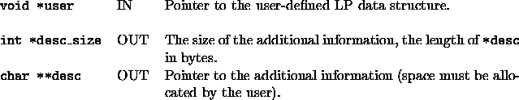
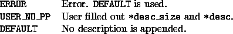

int user_add_to_desc(void *user, int *desc_size, char **desc)
Before a node description is sent to the TM, the user can provide a
pointer to a data structure that will be appended to the description
for later use by the user in reconstruction of the node. This
information must be placed into *desc. Its size should be
returned in *desc_size.
There is only one default option: the description to be added is considered to
be of zero length, i.e., there is no additional description.

